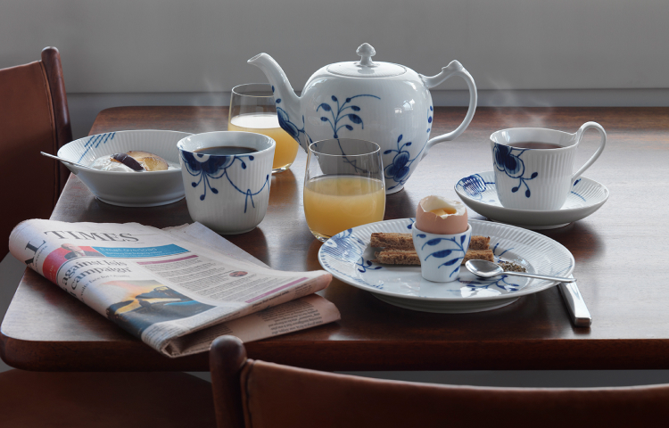
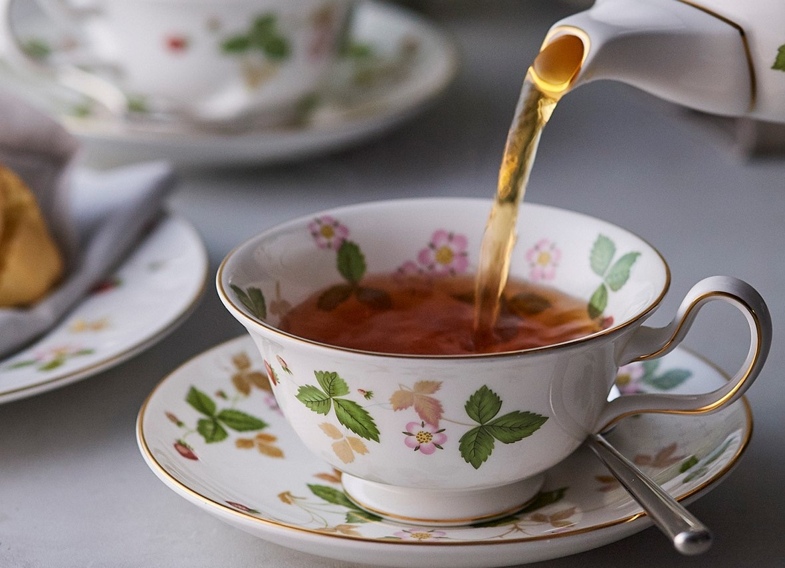
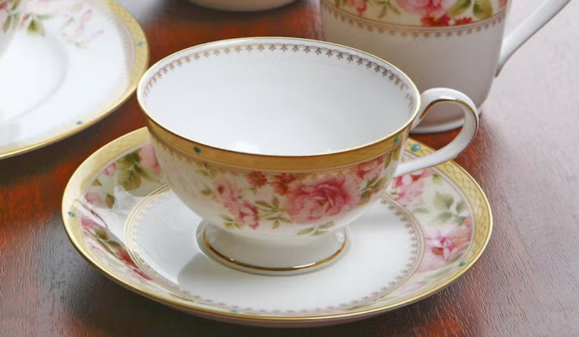

- トップ >
- おすすめの茶器紹介
おすすめの茶器紹介
気に入っている茶器を商品ごとに紹介します。
ブルーフルーテッド メガ

左右非対称なモチーフの配置はテーブルウェアに余白を生み、ブルーのハンドペイントと白いレリーフが、盛り付けた料理を生かし、生命感溢れるテーブルを演出します。 ロイヤル コペンハーゲンの新たなるアイコンとして、初めてスカンジナビアデザインを使う人にも、“ブルーフルーテッド プレイン”等の伝統的なパターンとのミックス&マッチを愉しむ方にも、広く愛されています。
ワイルド ストロベリー(ピオニー)

ワイルド ストロベリーの図案は、自然をこよなく愛する英国人に好んで使われてきたもので、創設者ジョサイア・ウェッジウッドが最初に作ったパターンブック(18世紀後半)にもすでに見受けられるほどです。 世界中で愛されている人気シリーズは、その愛らしさで人々を惹きつけてやみません。
ハートフォード

水彩タッチで優しく描いたピンクのバラが明るく華やか。 繊細で優雅な金模様とエメラルドの半球盛が高級感を醸し出します。 リラックスした雰囲気のティータイムを演出します。